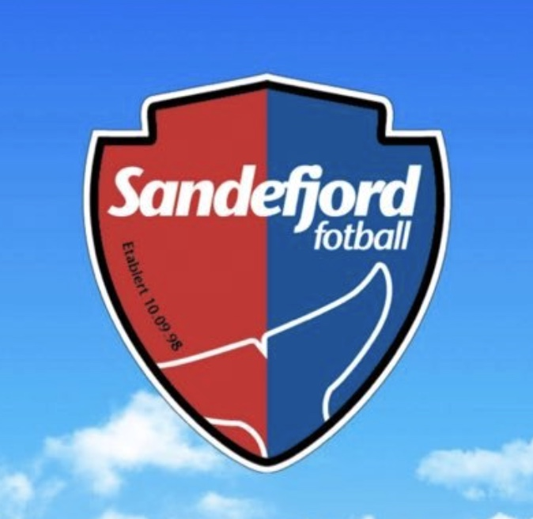
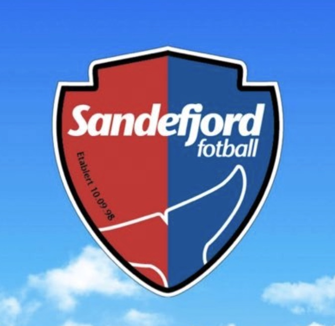
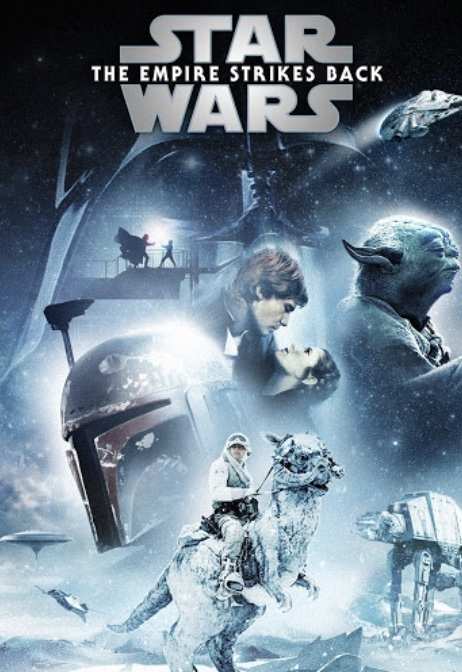

My Interests
Here are some of the things I enjoy the most in my free time. My interests are a mix of gaming, sports, music, movies, and podcasts — all things that have shaped a lot of who I am today.
Gaming
Gaming has always been a big part of my life. I play a lot of EAFC (formerly FIFA), since I enjoy football both on and off the pitch. I also like playing Star Wars Battlefront II, especially its multiplayer modes, and I sometimes play Fortnite with the boys when we want to chill and have fun.
 <
<
Sports
Football
Football is my biggest passion. I support Liverpool and my hometown club Sandefjord. Whether it's Premier League, Champions League or Eliteserien, I love watching matches and following the drama of the season.
 

Formula 1
I enjoy watching Formula 1 as well. I don’t really support one team specifically, but I like Red Bull and Max Verstappen. The rivalry, strategy and speed make the sport exciting to follow.

Music
I listen to a mix of artists, but my favorites right now are RocBoyz, GOLF and The Kid Laroi. Music is something I use for everything: training, gaming, traveling or just chilling.
Podcasts
I also listen to a lot of sports-related podcasts. My two favorites are B-Laget and Spårtsklubben. They are funny, entertaining, and a great way to stay updated on what happens in the world of sports.
Movies & TV Shows
Movies
I am a huge Star Wars fan, and my favorite movie is Episode V: The Empire Strikes Back. I also enjoy the James Bond films — my favorite is Goldfinger (1964), which I think is one of the best Bond movies ever made.
 width:180px; margin-top:12px; border-radius:10px; display:block; ">TV Shows
My favorite shows are How I Met Your Mother, The Office and The Boys. They all have different vibes, but I enjoy them for their humor, characters and stories.